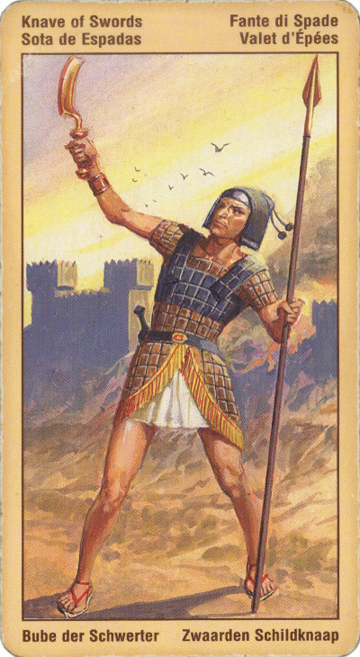

Принцесса Мечей (Валет)
Вестник, он же Паж или Раб Мечей.
Прямое положение: власть, надзор (надзиратель), секретная служба, бдительность, слежка, испытание и т. п.
Значение: При гадании в прямом положении может означать объяснение, выяснение отношений путем переговоров.
Валет Мечей так же, как и другие валеты, олицетворяет некий шанс или возможность. Это первооткрыватель. Он часто где-то учится. Скорее всего, он занимает зависимое положение. Иногда это просто инфантильный человек.
На карте нарисован мальчик с мечом. Лицемерный, злонамеренный молодой человек или девушка. Причинит вред гадающему. "Прилипала" изображает дружбу пока ему это выгодно,после предает. Человек, любящий придумывать и преувеличивать свою значимость, чтобы выглядеть "круче"в глазах других людей.
Злой шутник, трудный подросток.
Плохая новость, сплетни, зависть, шпионство. Так как мечи масть военных, принцесса означает молодого военного, сулит неизбежность призыва в армию.
В перевернутом положении – цепляние к мелочам, ссора, бурные дебаты и взаимные оскорбления вплоть до разрыва отношений. Перевернутая принцесса мечей указывает на лодыря, человека без цели в жизни, на "вечного студента". Карта может означать и обыкновенного тунеядца или человека, который психологически изматывает того, кому посчастливилось когда-то и как-то "облагодетельствовать" такую принцессу мечей.